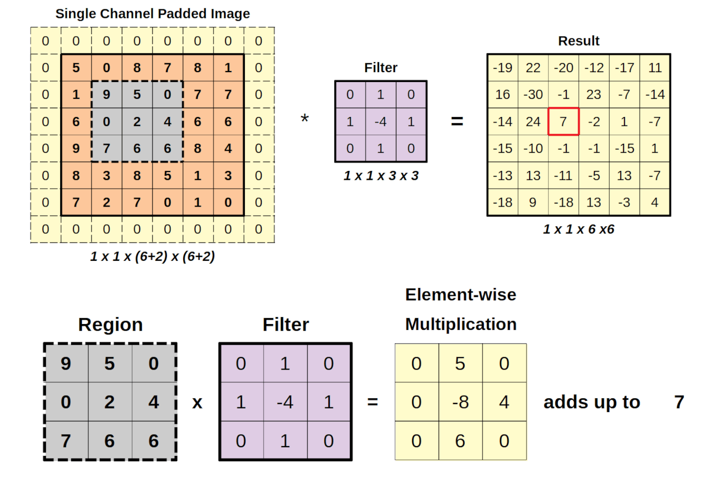
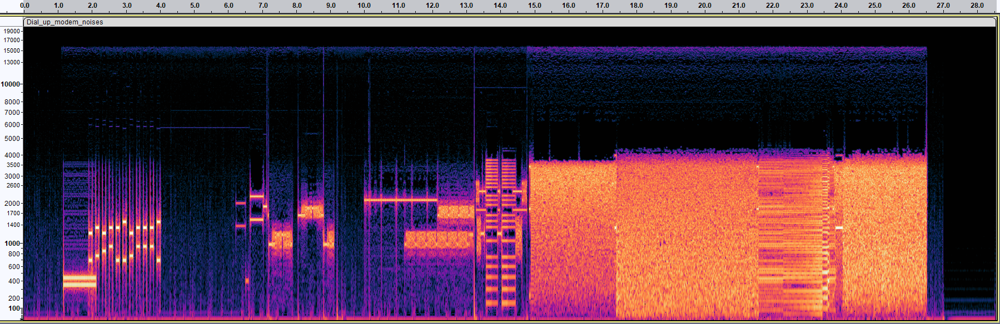

Imaging data is everywhere, from radiology scans and pathology slides to self-driving cars and satellite imagery. To make sense of this visual information, deep learning relies on Convolutional Neural Networks (CNNs): specialized architectures designed to handle data with grid-like structures such as images.
Welcome to Week 3 of my Deep Learning in Biology self-study series! In today’s post, we’ll explore why CNNs are so effective, how they overcome key challenges of high-dimensional visual data, and how modern CNN architectures have evolved over time.
Why images are hard for standard neural networks
Images are high-dimensional - every pixel is a separate feature, and the number of features grows quadratically with image resolution. For instance, a single 1000×1000 RGB image consists of three million input values!
Traditional fully connected networks don’t scale well in these scenarios. Each input pixel connects to every neuron in the next layer, leading to:
- Billions of learnable parameters
- High memory and compute demands
- Slow training
- Risk of overfitting (too many parameters, not enough data)
Convolutional Neural Networks (CNNs) solve these challenges by using local connections and shared weights to drastically reduce the number of parameters and improve efficiency.
Preserving spatial relationships
In an image, nearby pixels are often correlated with one another, forming edges, textures, and patterns. Fully connected networks ignore this structure, treating each pixel independently. CNNs, by contrast, respect spatial locality through the use of kernels.
Kernels can be thought of as filters that slide over small regions of the image. Each filter detects specific local features in the image (i.e. boundaries of a figure, edges, corner). These local patterns are combined in deeper layers to represent complex structures (such as faces or organ systems). This spatial awareness makes CNNs especially powerful for object detection and segmentation, where the arrangement of features matters.

Stability under transformations
In real-world settings, the same object can appear in many forms: rotated, scaled, flipped, or shifted. Translational invariance refers to the concept that a robust model should recognize an image regardless of any of these transformations. CNNs achieve translational invariance through:
Shared filters that detect patterns no matter where they appear in the image.
Pooling layers that summarize nearby activations, reducing sensitivity to position.
Data augmentation during the training process (i.e. random rotations, crops, flips) to teach invariance explicitly.
CNNs as hierarchical feature extractors
Images contain information at multiple levels. Low-level features can be thought of as edges and corners, mid-level as textures and motifs, and high-level as specific objects and scenes. CNNs naturally build this hierarchy through stacked convolutional layers. Early layers detect simple shapes, while deeper layers capture more abstract concepts. This multiscale representation is a key reason CNNs generalize well to complex visual tasks.
Anatomy of a CNN
A standard CNN is composed of several types of layers:
Convolutional layers extract local features using learnable filters
ReLU (Activation) layers introduce non-linearity for richer representations
Pooling layers downsample and increase translation invariance
Fully connected layers combine extracted features for final classification
Additional parameters that can affect the behavior of a CNN include:
Padding: including pads of empty pixels around the ends of an image preserves image borders during convolution.
Stride: manipulating the stride of a kernel controls how far across the image filters move per step, allowing for a balance between granularity and compute.
Pooling Type: Max pooling merges features across a group of pixels, allowing for the emphasis of strong features. Meanwhile, average pooling takes the average of a set of pixels, smoothing outputs in the process. Max pooling is generally preferred for classification, while average pooling is better for tasks requiring contextual smoothness.
What is a convolution?
Mathematically, a convolution makes use of two parameters: an input (i.e. an image), and a kernel (the filter for the image). These parameters are merged to produce an output (feature map) as follows:
\((f*g)(i,j)=\Sigma_a \Sigma_b f(a, b) g(i-a, j-b)\)
In practice, CNNs use cross-correlation, which is similar but omits the kernel flip. Each kernel acts as a feature detector, highlighting areas of the image that match its pattern.

Beyond images: CNNs for audio and text
The concepts of locality and translation invariance applies to data types beyond images. Two other potential use cases include audio and text.
With audio, local patterns in the data may represent short bursts of frequencies or amplitude changes. CNNs can process these one-dimensional signals directly or make use of two-dimensional spectrograms that plot time against frequency.

Similarly for text, one-dimensional convolutions can be applied over word embeddings. CNNs can be effective in text for short-range dependencies - however, for longer sequences, we’ll want to turn to more advanced models like transformers.
Iconic CNN architectures
Let’s look at some key milestones that shaped CNN development:
AlexNet (2012)
5 convolutional + 3 fully connected layers.
Introduced ReLU, dropout, and local response normalization.
Sparked the deep learning revolution after winning ImageNet by a huge margin.
VGG (2014)
Deep and simple: small 3×3 filters stacked in depth.
Up to 19 layers, with ~140M parameters.
Still popular for transfer learning due to its clean architecture and pretrained weights.
GoogleNet / Inception (2014)
Used 1×1 convolutions to reduce dimensions of data before applying larger filters.
Inception modules combined multiple filter sizes in parallel.
22 layers deep but only 5M parameters, making it extremely efficient.
ResNet (2015)
Introduced residual connections, allowing the network to learn residuals instead of direct mappings.
Solved the vanishing gradient problem, enabling networks >100 layers deep.
Squeeze-and-Excitation (SE) Network
Added attention to channel relationships.
Learns which feature maps are most important.
MobileNet
Designed for mobile devices.
Uses depthwise separable convolutions for efficiency.
Trades some accuracy for speed and compactness.
Optimization and generalization
Training deep CNNs is challenging - overfitting, slow convergence, and massive compute demands are common issues. Common remedies include:
Data Augmentation
- Randomly modify training images (rotate, crop, flip, color-jitter) to simulate diversity.
Regularization
Penalize large weights:
L1 (Lasso): Encourages sparsity
L2 (Weight Decay): Smooths solutions
Elastic Net: Combines both
Dropout and Early Stopping
Dropout: Randomly deactivate neurons to prevent co-adaptation.
Early Stopping: Halt training when validation performance peaks.
Transfer Learning
- Reuse pretrained CNNs (e.g., VGG, ResNet) and fine-tune on smaller, domain-specific datasets.
Looking ahead
CNNs have revolutionized visual understanding in the past decade, allowing for classification, object detection, and segmentation for a variety of imaging data and other data types. Nevertheless, obstacles remain, including:
High memory demands and long training times.
Dependence on large labeled datasets.
Difficulty with small or low-resolution inputs.
Despite these challenges, CNNs remain foundational to computer vision, and their core ideas of locality, hierarchy, and invariance continue to inspire modern architectures like transformers.
Key Takeaways
CNNs reduce the parameters needed to represent a dataset via local connectivity and weight sharing.
CNNs can capture spatial hierarchies through stacked layers.
Pooling and data augmentation improve translational invariance.
Modern CNNs (VGG, ResNet, Inception) balance depth, efficiency, and accuracy.
CNNs can extend beyond imaging data to other modalities, including audio, text, and multiomics.